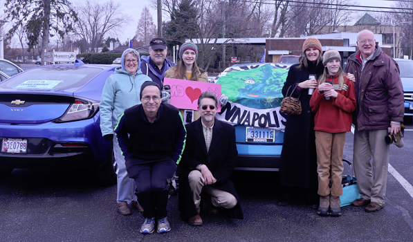
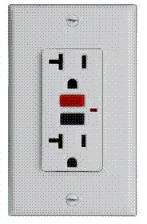
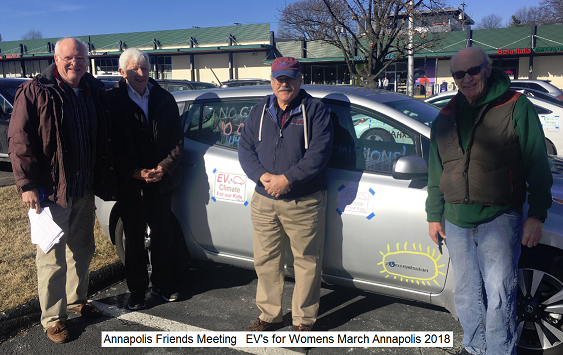
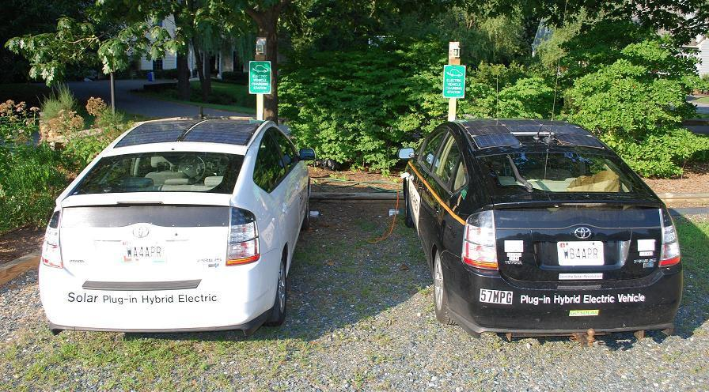
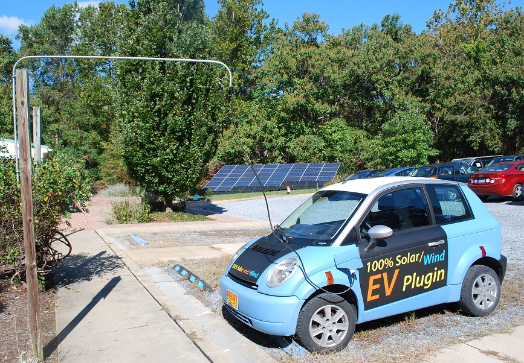
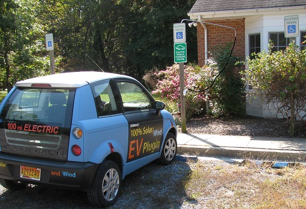
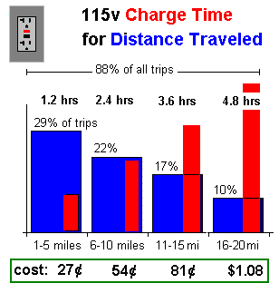
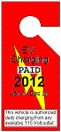

This is a sub-page of our overall Environmental Initiatives web page.
. . .
 Environmental Heritage: Quakers have a tradition of simplicity and a testimony for the stewardship of the Earth. We are committed to living in harmony with our environment and starting in 2009 we began to consider investments to lower our carbon footprint with initially switching our electric provider from half coal electricity to 100% renewable solar and wind power. In addition we added support for Electric Vehicles driven to meeting... Now (Jan 2021) we have sixteen EV's in our group and four Level2 chargers. The photo at right is our participation in the EV rally on 10 Jan 2018 around the statehouse to raise attention to our Legislators about Clean Energy and below at the Women's march in Annapolis on 20 Jan.
Electric Vehicles: We find that what most people think they know about Electric Cars (EV's) is probably wrong and outdated. See the EV misinformation web page. We are now ten years into the EV revolution and since 2013, EV's are now better, faster, cleaner, cheaper to buy, cheaper to operate and cheaper to maintain than gas cars. With now over 62 EVs on the market in 2020, how can we not help educate others?
Charging Outlets: With nearly 1/3rd of our Friends already driving hybrids in 2009, and with over 250 EV models planned over the next 6 years, the Meeting wanted to be ready for this new clean energy transportation. In stewardship of the Earth and in testimony to peace to prevent future wars over diminishing oil supplies, we added two standard 120v outlets to our outdoor lighting circuit for EV charging in the parking lot (shown below). These outlets encouraged the use of EVs to not only help reduce our carbon footprint, but to let members top-off their battery for the return home after Meeting. By 2021, almost 20% of our members are driving EVs!
Charging Signs: The value of these charging stations and signs are not so much for the 1% of members and visitors that might need them but for the education of the other 99% that see them as a reminder that an EV can be charged almost anywhere due to the ubiquity and presence of standard outdoor 120v outlets. During a two hour visit to meeting on Sunday, the typical EV can gain almost 10 miles recharge for the trip back home or other errands. See also how the Presbyterians in Arkansas did it too.
  
Annapolis Interfaith Environmental Committee: Through our participation in this committee,
our initiative towards supporting EV clean renewable transportation has been spread to other
faith communities in the area:
See other churches and schools putting up outlet signs!
 . . . 
More Stations: In 2016 we doubled our L1 EV charging to 4 outlets and included an outlet for a portable level-2 EVSE. by 2018 we finally trenched the parking lot and added 2 more L1 outlets and two Level-2 (240 V) charging stations! Now, in 2021 with over 16 members with EV's we replaced the inconvenient bring-your-own-cord outlets with a total of four permanent L2 charging cords. In addition, we demonstrated how to cross a sidewalk with a bent piece of 1/2" conduit on a handicapped post to swing out and hold the cord over the sidewalk as shown above. On the right, when not in use, it swings back over the bushes. The height should probably be at 7 feet since that seems to be the height of all the commercial awnings that overhang from various business in downtown, so that is probably the code, though I couldn't find it. Notice also how our meeting house is fully solar powered (and hence charging too) from our 9 kW array in the background.
Just an extension cord will do: If your church does not have electricity near the parking lot, don't forget that an EV can still be charged via a heavy duty extension cord. So just buy the cord, keep it in a closet for easy access and still PUT UP THE SIGN. Members will know where to get the extension cord if needed. And besides, the value of this sign is 99% for the visibility and only 1% for actual usage as noted above. You could even splice a longer cord into an L2 EVSE (about $195) and offer 3 times faster charging when it is plugged into a 240 VAC 20 amp socket.
We have the signs. Just ask and we will mail you one!
Simplicity: The L1 (or L2) outlets are simple houshold outlets on a post, but they are still capable of adding about 8 to 10 miles range to an EV while parked for about 2 hours. The L2 outlet is a 240VAC 20 amp outlet and can support 3 kW charging. There is too much media focus on fast-charging an EV in the shortest possible time, using expensive fast chargers (7kw L2). This is an unfortunate and misleading legacy of gas cars which must be inconveniently refueled while we are using them. On the other hand, EV's are conveniently refueled while parked. Since the typical car sits parked for more than 21 hours a day usually at home, at-work and at-church, just plugging it in while parked is a great way to preesrve the battery at a fully charged state and ready for maximum range for every trip. The cost is only about 20 cents an hour on L1 and is easily met with a few quarters in the plate on Sunday.
 Convenience: Having the plug-in outlets encourages members to not fear an EV for their next car purchase. Having outlets both at work, at church, and at home effectively doubles the range of plug-ins by allowing the EV owner to charge during the day at work as well as at home and to pick up a few miles on Sunday. See also the web page on EV Charging Everywhere for more info on using existing 120v outlets for convenient charging.
Cost: As shown here, simple 120 volt outdoor outlets placed conveniently at home, at work and at church can accomplish nearly all of EV charging needs. Fully 78 percent of most commuters can charge in under 5 hours at work or home and the typical 10 mile or less Church visit on Sunday can be replenished in 2 hours or so for two quarters in the plate. Not only for our members, but as good Sumaritans we can assist those EV drivers who may need an emergency charge just to get home. For this reason, our charging station is listed on a national EV charger locator. Further, the simple 120v outlet cannot be abused, since it would take nearly 10 hours just to steal about $2 worth of electricity.
Public Charging is rarely needed: This installation shows the simplicity of using EV's for our daily transportation. � There is too much emphasis on expensive high-voltage fast-chargers for EV's, considering that most people who purchase EV's never intend on driving them across country or far from their local area commute anyway. The EV is ideal for the regular commuter who goes to work and home every day and plugs into her home outlet overnight. �Even there, there is no need for a big expensive charger, just a standard outlet in the garage is suitable to provide a modest daily commute (30-40 miles) after overnight charging.
 A Battery is not a Tank!
See the EV misinformation web page.
We are saddled with a century and more than four generations of Gas-Tank and Public-Gas-Station
thinking. We must forget this old legacy and realize that a Battery is not
a gas tank. Gas cars drive-to-empty and then fill-to-full at special
public-gas-stations as shown in red here. But EV's can charge anywhere-at-anytime from any-outlet. And so the EV usage model is more like a lap-top or other
battery tool which is left on charge whenever parked so that it is fully charged at the
start of every trip. One never has to find a public charge station beacuse each trip can
be replenished the next time the car is conveniently parked!
A Battery is not a Tank!
See the EV misinformation web page.
We are saddled with a century and more than four generations of Gas-Tank and Public-Gas-Station
thinking. We must forget this old legacy and realize that a Battery is not
a gas tank. Gas cars drive-to-empty and then fill-to-full at special
public-gas-stations as shown in red here. But EV's can charge anywhere-at-anytime from any-outlet. And so the EV usage model is more like a lap-top or other
battery tool which is left on charge whenever parked so that it is fully charged at the
start of every trip. One never has to find a public charge station beacuse each trip can
be replenished the next time the car is conveniently parked!
Charging Ubiquity and Value: The promise of the EV and the top two values of the EV to the owner are its complete independence from foreign Oil and also its lower Total-Cost-of Ownership (TCO). But not only does it promise freedom from oil, but also freedom from the gas pump and the public gas station model since she can charge practically anywhere there is an outlet. But this also ties into TCO. Electricity at home, overnight is cheap, at work during the day it is higher, but the cost to use a Fast-Charger at a Public Charging Station will be 2 to 4 times the normal cost of electricity. The expectation that people will routinely flock to public chargers is about as likely as people driving to Washington DC to fill up on $12/gal gasoline. It will not happen.
 How to Pay at-work: See payin-to-plugin page The public charger is a backup and a security blanket that is needed for peace-of-mind, but it is not the model of routine daily usage of the EV. We simply need to get 120v outlets everywhere we park and put up the signs to show who to pay. Statistically a typical commuter charge during the day costs about a dollar; so a month of daily charging only costs about $20... about what some people have to pay for a single day to park their gas-guzzer in Washington DC. � Employers can easily devise a sticker or placard system as shown here that employees can buy in advance to give them authority to plug into these convenience outlets per month. � This is a no cost initiative, since most parking lots already have several convenience outlets scattered about. �All the employees need is the means to pay in advance to gain permission to plug in.
The EV Charging Everywhere page has more details on this topic and a link where to purchase a sign for your church parking lot.
------------------------------------------------------------
Return to Annapolis Friends Meeting Environmental page
See Sitemap of all my other APRS, Energy, EV and Ham Radio pages
Bob Bruninga, PE
lastname@usna.edu